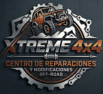
Portafolio de Título PTI4186 — Fase 2Xtreme 4x4
Centro de Reparaciones y
Modificaciones Off-Road
Informe Final — Carrera Técnico en Mecánica Automotriz y Autotrónica
Problema o situación abordada
El presente proyecto se centra en la modificación y reparación especializada de vehículos y sistemas 4x4, abordando de manera integral las exigencias mecánicas del uso off-road. La iniciativa surge de una necesidad crítica en la zona lacustre de la Región de la Araucanía, donde turistas y aficionados enfrentan terrenos complejos de barro, nieve y ceniza volcánica.
A diferencia de la mecánica convencional, esta propuesta plantea que la intervención no debe ser solo reactiva ante fallas, sino proactiva, elevando los estándares de seguridad y confiabilidad mediante el refuerzo de componentes para uso extremo.
Nombre comercial: Xtreme 4x4 — el término "Xtreme" significa superar los límites de fábrica para que un vehículo soporte terrenos, esfuerzos y condiciones ambientales que un modelo estándar no podría resistir.
Imagen institucional — Xtreme 4x4: Centro de Reparaciones y Modificaciones Off-Road
Contexto geográfico
Población impactada
- Turistas: Visitantes que acuden a la zona atraídos por el turismo de aventura y que carecen de vehículos con preparación adecuada para el terreno.
- Aficionados al Off-Road: Usuarios locales y regionales que recorren rutas de alta complejidad como Caburgua-Colico y requieren soluciones mecánicas avanzadas.
Competencias y áreas de desempeño técnico
| Competencia | Aplicación en el proyecto |
|---|---|
| Sistemas de Transmisión | Optimización de diferenciales y tracción para gestionar altos niveles de torque sin daños estructurales |
| Dirección, Suspensión y Frenos | Base técnica para el lift kit y modificación de geometría, conservando estabilidad dinámica y frenado eficaz |
| Mantenimiento Automotriz | Diseño de planes de mantenimiento rigurosos que compensen el esfuerzo mecánico adicional del uso extremo |
Objetivos del Proyecto
Objetivo General: Optimizar y reparar sistemas mecánicos en vehículos 4x4 para garantizar un desempeño superior, seguro y confiable en terrenos de alta exigencia (barro, nieve y ceniza volcánica) en la zona lacustre de la Región de la Araucanía.
Objetivos Específicos
- Evaluar y diagnosticar las fallas comunes y los límites técnicos de los componentes de fábrica bajo condiciones de uso extremo.
- Implementar mejoras técnicas en los sistemas de tracción, suspensión y refrigeración mediante el uso de componentes de alto rendimiento.
- Validar los ajustes realizados bajo estándares de fabricantes para asegurar la estabilidad y seguridad del vehículo en rutas críticas como Caburgua-Colico.
Metodología
La metodología combina el rigor de la ingeniería mecánica con la planificación estratégica de negocios, estructurándose en etapas secuenciales:
Estudios en talleres competidores y encuestas a aficionados al jeepeo y turistas en Villarrica, Pucón y Caburgua.
Búsqueda de especificaciones en manuales de taller certificados para asegurar cumplimiento de estándares de seguridad.
Cotizaciones detalladas con proveedores para establecer rangos de precios competitivos.
Definición de procedimientos paso a paso para el refuerzo de chasis, instalación de bloqueos y mantenimiento preventivo especializado.
Desarrollo del Proyecto
4.1 Etapas más significativas
- Investigación de mercado y encuesta: Aplicación de 78-79 encuestas en la zona lacustre para validar la demanda del nicho 4x4.
- Levantamiento técnico y normativo: Revisión de manuales de taller certificados para definir los protocolos de modificación.
- Análisis estratégico: Desarrollo de PESTEL, FODA, CAME, Porter, Cadena de Valor y Lean Canvas.
- Cotización y factibilidad económica: Cotizaciones formales con NEUMACHILE, Liqui Moly, Sodimac y Olate Ferretería.
- Diseño operativo: Layout del taller, protocolos técnicos por fases y protocolo de atención al cliente.
4.2 Dificultades y facilitadores
✅ Facilitadores
- La ubicación en la zona lacustre permitió acceso directo a vehículos reales operando en terrenos extremos.
- Acceso constante a internet para consultar manuales técnicos certificados de fabricantes.
- División clara de roles: investigación de mercado (Angell Palma), levantamiento normativo (Nicolás Toro), gestión financiera (David Aguayo) y protocolos de taller (Benjamín Navarrete).
- Contacto con centros de práctica y talleres mecánicos de la zona como canal de validación técnica.
⚠️ Dificultades
| Dificultad | Descripción |
|---|---|
| Repuestos sin distribución local | Componentes Heavy Duty concentrados en Santiago o el extranjero. Precios y tiempos de entrega difíciles de confirmar. |
| Tiempo operativo limitado | 90 horas semestrales insuficientes para validaciones técnicas complejas como reprogramación de ECU. |
| Sin infraestructura física propia | Fase APT requirió validar mediante simulación digital y consulta de manuales sin acceso a taller físico. |
| Fluctuaciones del tipo de cambio | Dependencia de componentes importados expuso el análisis financiero a variaciones del dólar. |
4.3 Plan de acción y ajustes realizados
| Dificultad | Ajuste aplicado |
|---|---|
| Repuestos sin distribución local | Contacto directo con distribuidores mayoristas en Santiago. Cotizaciones formales con validez de 15 días para fijar precios base. |
| Tiempo limitado | Carta Gantt con entregas semanales por integrante, maximizando horas fuera de clases. |
| Sin taller físico | Software de diseño para el Layout y manuales de taller digitales certificados para validar cada procedimiento. |
| Variación del dólar | Margen de contingencia del 10% incorporado en el análisis financiero. |
Evidencias Operativas
5.1 Checklist de Recepción de Vehículo 4x4
| N° | Ítem de Inspección | Conforme | No Conforme | Observaciones |
|---|---|---|---|---|
| 1 | Estado general de pintura y carrocería | ☐ | ☐ | |
| 2 | Abolladuras o daños estructurales visibles | ☐ | ☐ | |
| 3 | Nivel de aceite de motor | ☐ | ☐ | |
| 4 | Nivel de líquido de frenos | ☐ | ☐ | |
| 5 | Nivel de aceite de caja de transferencia | ☐ | ☐ | |
| 6 | Nivel de aceite diferencial delantero/trasero | ☐ | ☐ | |
| 7 | Fugas visibles en cárter, coronas o caja de cambios | ☐ | ☐ | |
| 8 | Holgura en rótulas del tren delantero | ☐ | ☐ | |
| 9 | Holgura en terminales de dirección | ☐ | ☐ | |
| 10 | Estado de bujes de bandejas superior/inferior | ☐ | ☐ | |
| 11 | Estado de amortiguadores (fugas/golpes) | ☐ | ☐ | |
| 12 | Estado de neumáticos (desgaste/presión) | ☐ | ☐ | |
| 13 | Estado de frenos (disco/pastillas/tambor) | ☐ | ☐ | |
| 14 | Estado de cardanes y homocinéticas | ☐ | ☐ | |
| 15 | Funcionamiento luces delanteras/traseras | ☐ | ☐ | |
| 16 | Funcionamiento 4x4 High / 4x4 Low | ☐ | ☐ | |
| 17 | Códigos de falla activos (escaneo OBD) | ☐ | ☐ | |
| 18 | Kilometraje al ingreso | ☐ | ☐ |
5.2 Protocolo de Torques y Geometría
| Componente | Torque espec. (Nm) | Torque aplicado (Nm) | Técnico |
|---|---|---|---|
| Perno superior amortiguador delantero | |||
| Perno inferior amortiguador delantero | |||
| Perno superior amortiguador trasero | |||
| Perno inferior amortiguador trasero | |||
| Rótula inferior bandeja | |||
| Rótula superior bandeja | |||
| Pernos bandeja al chasis | |||
| Terminal de dirección | |||
| Tuerca central homocinética |
Registro de Geometría
| Ángulo | Especificación fábrica | Antes | Después | ¿Tolerable? |
|---|---|---|---|---|
| Caster derecho | ☐ Sí ☐ No | |||
| Caster izquierdo | ☐ Sí ☐ No | |||
| Camber derecho | ☐ Sí ☐ No | |||
| Camber izquierdo | ☐ Sí ☐ No | |||
| Toe total | ☐ Sí ☐ No | |||
| Ángulo cardán delantero | 3° – 5° máx. | ☐ Sí ☐ No | ||
| Ángulo cardán trasero | 3° – 5° máx. | ☐ Sí ☐ No |
5.3 Layout del Taller con Zonas de Seguridad
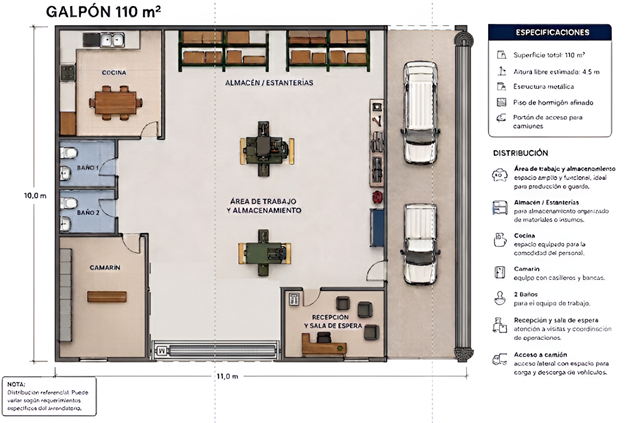
Galpón 110 m² — Distribución de zonas de trabajo, almacenamiento y servicios
| Zona | EPP Obligatorio | Riesgo Principal |
|---|---|---|
| Box de trabajo activo | Zapatos de seguridad, guantes, gafas, mascarilla | Caída de vehículo, proyección de chispas |
| Almacén de repuestos | Zapatos de seguridad, guantes | Caída de objetos pesados |
| Zona de alineación | Zapatos de seguridad, chaleco reflectante | Atropello, aplastamiento |
| Acceso camiones | Chaleco reflectante | Atropello |
| Recepción / Sala espera | Ninguno | Bajo riesgo |
Cotizaciones Formales
A continuación se presentan las cotizaciones reales obtenidas de proveedores para sustentar el análisis de factibilidad económica del proyecto.
Maquinaria y Equipamiento — NEUMACHILE S.A.
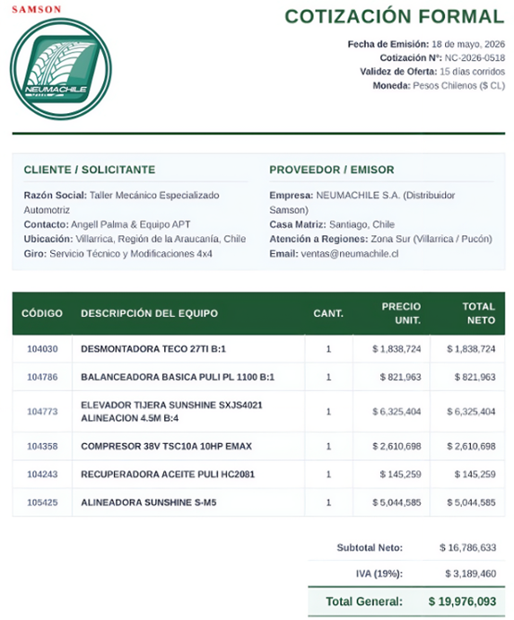
Cotización N° NC-2026-0518 — Total: $19.976.093 CLP (incluye IVA)
Químicos, Aditivos y Lubricantes — Liqui Moly Chile SpA
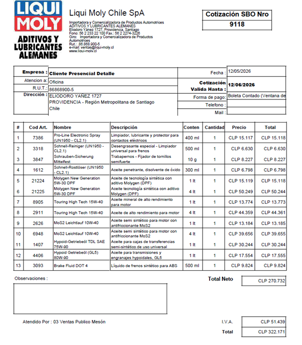
Cotización SBO N° 9118 — Total: $322.171 CLP (incluye IVA)
Herramientas Especializadas — Sodimac S.A. (Lote 1)
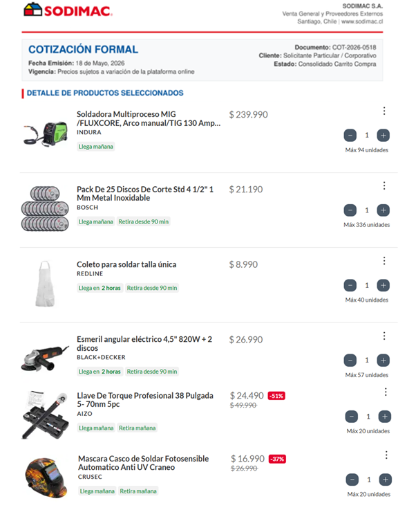
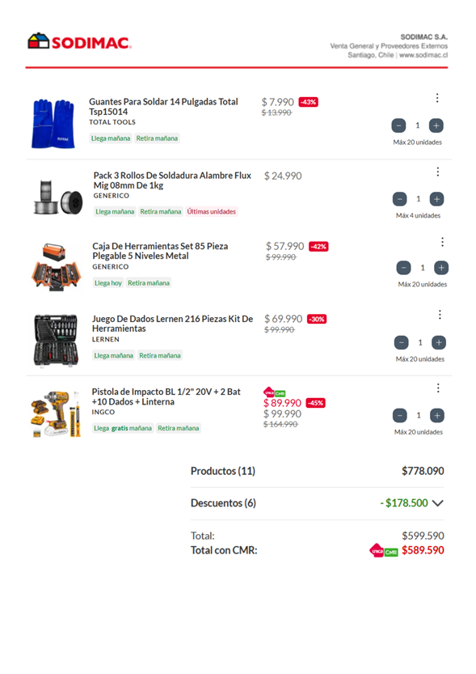
Cotización COT-2026-0518 — Total con CMR: $589.590 CLP
Materiales y Ferretería — Olate Ferretería SpA
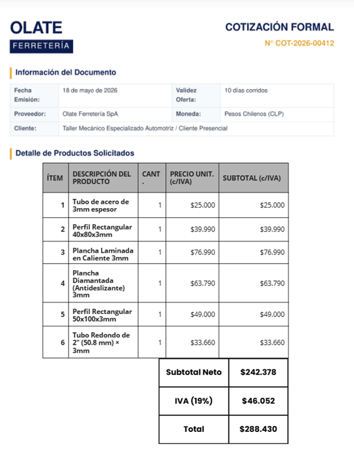
Cotización N° COT-2026-00412 — Total: $288.430 CLP (incluye IVA)
Mobiliario e Infraestructura — Sodimac S.A. (Lote 2)
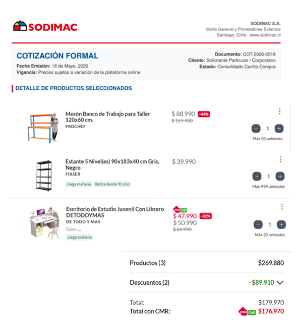
Cotización COT-2026-0518 — Total con CMR: $176.970 CLP
Infraestructura / Arriendo — Patricio Gidi Propiedades
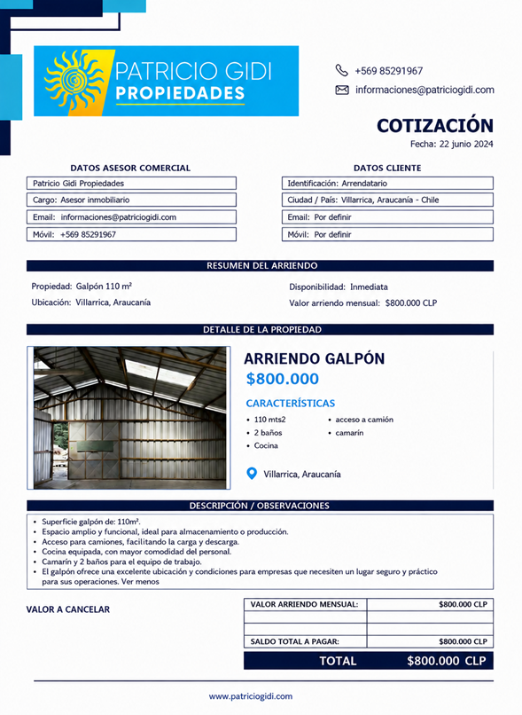
Galpón 110 m² — Villarrica, Araucanía — Arriendo mensual: $800.000 CLP
Rigor Técnico Mecánico
6.1 Seguridad Industrial — Instalación de Suspensión Modificada
Antes de la intervención
- Verificar el estado del chasis mediante inspección visual y prueba de torque en puntos de anclaje.
- Elevar el vehículo con el elevador tijera certificado (Sunshine SXJS4021), asegurando el eje con soportes independientes.
- Bloquear ruedas con cuñas y desconectar la batería antes de intervenir el tren delantero.
- EPP obligatorio: zapatos de seguridad, guantes de cuero, gafas de protección y ropa ignífuga para trabajos con soldadura.
Durante la intervención
⚠️ Crítico: Nunca comprimir un resorte de suspensión sin prensa de resorte certificada con collar de seguridad. Un resorte liberado sin control puede generar una fuerza de hasta 500 kg, causando lesiones graves o muerte.
- Los pernos de anclaje deben apretarse con llave de torque calibrada, nunca con pistola de impacto en el apriete final. Valores típicos: 80 a 130 Nm según modelo y fabricante.
- El torque definitivo de los bujes del chasis se aplica con el vehículo apoyado sobre sus ruedas en posición de carga normal para evitar desgaste prematuro por torsión estática.
Posterior a la intervención
- Todo vehículo intervenido pasa obligatoriamente por alineación de 3 ángulos (Caster, Camber y Toe) antes de la entrega.
- Prueba de ruta estática y dinámica para verificar ausencia de vibraciones en cardán y estanqueidad total del sistema.
6.2 Tolerancias Cinemáticas de la Transmisión
Ángulo de trabajo del cardán
El ángulo máximo recomendado por fabricantes para un cardán estándar en uso off-road es de 3° a 5° en condición estática. Si el lift supera las 3 pulgadas sin corrección, se debe instalar un kit de corrección de ángulo diferencial (differential drop kit) o cardanes de longitud extendida.
Para verificarlo: medir el ángulo del eje de transmisión con un goniómetro digital antes y después del levante.
Homocinéticas (CVJ) en tracción delantera
Las homocinéticas trabajan correctamente hasta un ángulo máximo de 40° a 45° según fabricante. Al aumentar el levante sin modificar la longitud de los brazos de suspensión, este ángulo se acerca al límite en compresión máxima.
Solución aplicada: instalación de bandejas superiores de desplazamiento (offset upper control arms) que corrigen la geometría y mantienen el ángulo dentro del rango seguro.
| Componente | Tolerancia máxima | Consecuencia si se supera |
|---|---|---|
| Cardán estándar (estático) | 3° – 5° | Vibraciones, desgaste acelerado de crucetas |
| Homocinética CVJ (compresión) | 40° – 45° | Ruido tipo "clac", rotura en terreno |
| Eje de transmisión (dinámico) | Según fabricante | Vibración en velocidad, desequilibrio |
6.3 Reprogramación Electrónica y Calibración de Sensores
Los vehículos 4x4 modernos trabajan con parámetros calibrados para la altura y geometría de fábrica. Al modificar la altura, los siguientes sistemas requieren recalibración:
| Sistema | ¿Calibración requerida? | Procedimiento | Consecuencia si se omite |
|---|---|---|---|
| Sensor Ángulo Dirección (SAS) | Obligatorio | Escáner → módulo ABS/ESP → rutina "Calibración SAS" con ruedas en posición recta | Frenadas de emergencia falsas en terreno off-road |
| TCS / ABS (diámetro de neumático) | Obligatorio | Corrección de circunferencia de rueda (tire size calibration) en ECU | Control de tracción erróneo, ABS mal calibrado |
| Sensor de nivel de suspensión | Según modelo | Reprogramación en vehículos con suspensión electrónica (ej. Land Cruiser con KDSS) | Sistema intenta corregir continuamente la nueva altura como si fuera una falla |
Resultados e Impacto
7.1 Análisis Financiero
Tabla de Amortización del Crédito (24 meses)
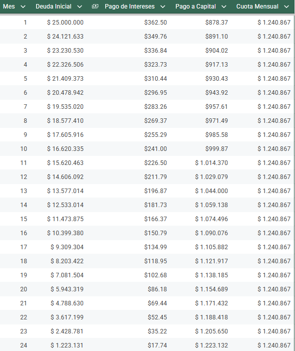
Crédito $25.000.000 — 24 meses — Tasa 1,45% mensual — Cuota fija $1.240.867
Proyección del Flujo de Caja
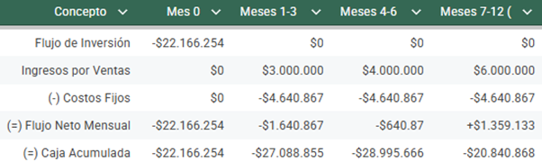
Flujo de caja proyectado a 12 meses con tres etapas de maduración
Punto de Equilibrio — Mix de Servicios
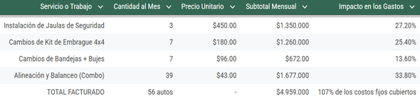
56 vehículos mensuales = $4.959.000 = 107% de costos fijos cubiertos
Resumen de Inversión Inicial
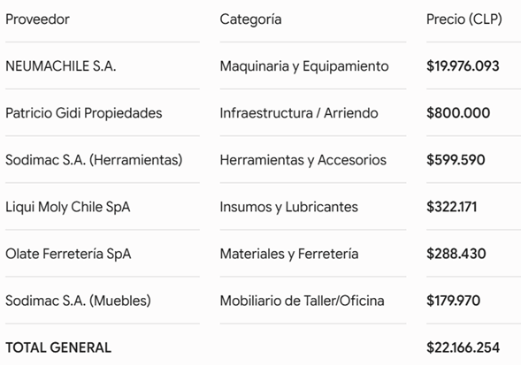
Inversión total: $22.166.254 CLP distribuida en 6 proveedores
7.2 Estudio de Mercado
Cierre y Proyecciones
Reflexión sobre el aporte del Proyecto APT
Este proyecto nació de una profunda vocación por la ingeniería aplicada y la personalización técnica, orientada hacia la mecánica de especialidad con un enfoque particular en la optimización de sistemas de suspensión y tracción para vehículos de alto desempeño.
A lo largo del desarrollo del Proyecto APT, ese interés inicial se transformó en certeza. Cada etapa — desde el levantamiento técnico hasta el análisis financiero — confirmó que la mecánica de especialidad 4x4 no solo es una pasión, sino un nicho profesional real y rentable en la zona lacustre de la Araucanía.
Los intereses profesionales planteados al inicio de la asignatura se mantienen y se han profundizado: la especialización en sistemas de tracción, suspensión y diagnóstico avanzado sigue siendo el eje central del perfil profesional que se busca desarrollar.
Proyecciones laborales
Insertarse en talleres especializados de la región para ganar experiencia en modificaciones reales de vehículos 4x4, aplicando los protocolos y estándares trabajados en este proyecto.
Materializar el taller Xtreme 4x4 en Villarrica, comenzando con los servicios de mayor rotación — alineación, balanceo y suspensión — para construir cartera de clientes.
Ser el taller especializado en soluciones 4x4 líder y referente en toda la Región de la Araucanía, reconocidos por calidad técnica, formalidad con garantías escritas y respeto por el medio ambiente.
La realización de este proyecto dejó en claro que el camino profesional no es el de un técnico generalista, sino el de un especialista en ingeniería automotriz aplicada al mundo off-road — un perfil que la zona lacustre necesita y que este equipo está preparado para cubrir.